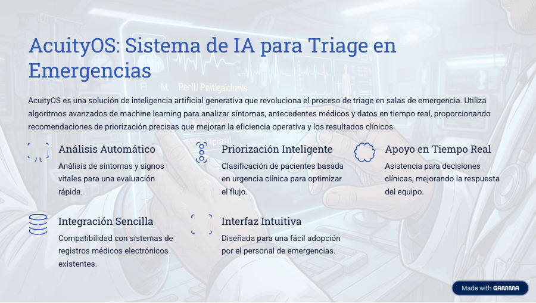
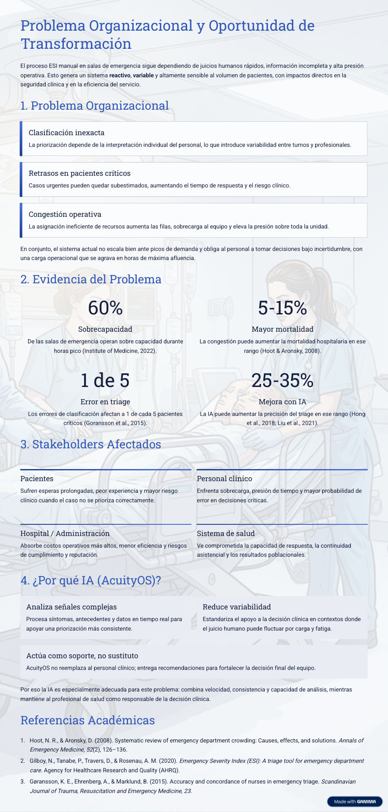
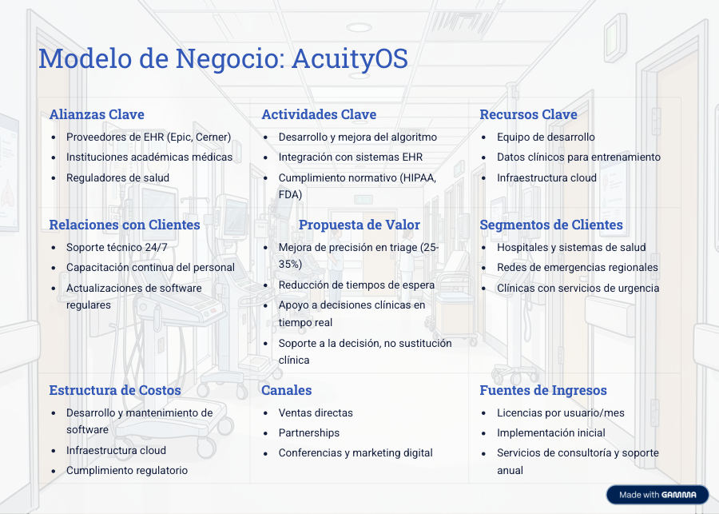
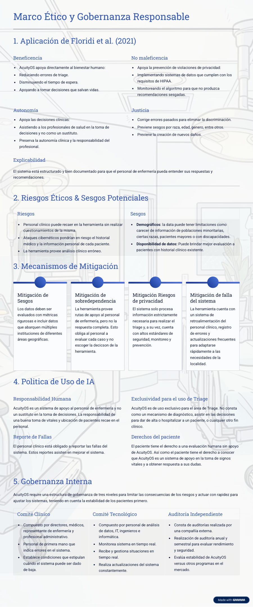
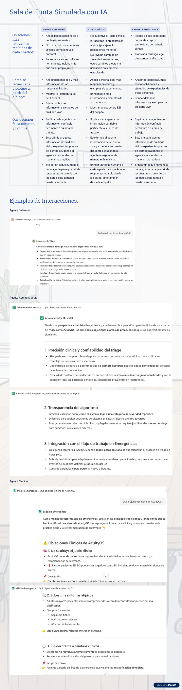
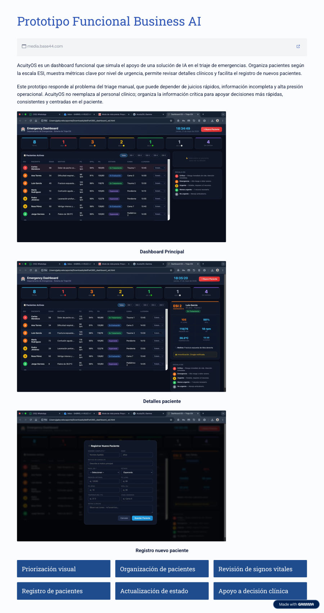
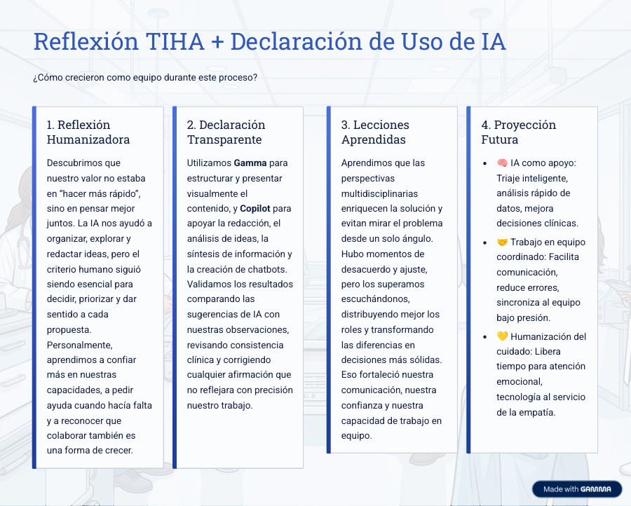
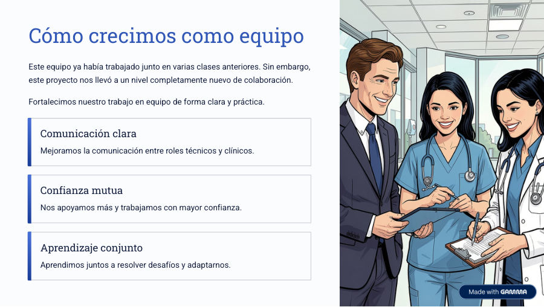
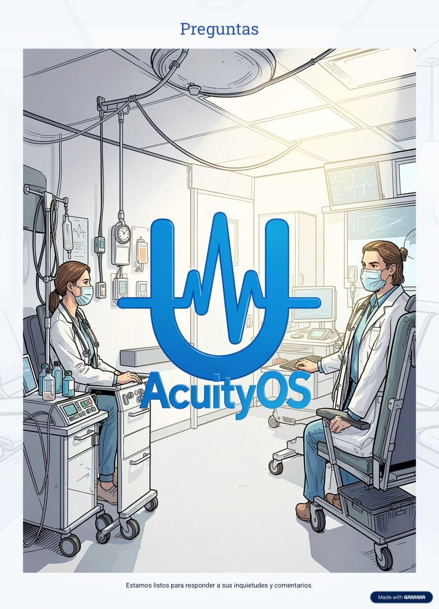

AcuityOS | Información del curso, misión y equipo
AcuityOS integra IA, salud y estrategia empresarial para mejorar la eficiencia operativa y el bienestar del paciente.
Información del curso
- Curso: Generative Artificial Intelligence for Business Transformation (ADMI 6990)
- Institución: Universidad de Puerto Rico – Recinto de Río Piedras
- Profesor: Dra. Mariluz Serrano Ortiz
- Período: 3T 2025–2026
Equipo y roles
- Gabriel A. Velez Aponte: Administrador
- Milagros Munoz Figueroa: Médico
- Lizbeth M. Hernandez Mercado: Enfermera
Presentación de Milagros
Reproduce el video aquí:
Página 1 del PDF original: portada, curso, misión, equipo y video.
AcuityOS: Sistema de IA para Triage en Emergencias
AcuityOS es una solución de inteligencia artificial generativa que revoluciona el proceso de triage en salas de emergencia. Utiliza algoritmos avanzados de machine learning para analizar síntomas, antecedentes médicos y datos en tiempo real, proporcionando recomendaciones de priorización precisas que mejoran la eficiencia operativa y los resultados clínicos.
Análisis Automático
Análisis de síntomas y signos vitales para una evaluación rápida.
Priorización Inteligente
Clasificación de pacientes basada en urgencia clínica para optimizar el flujo.
Apoyo en Tiempo Real
Asistencia para decisiones clínicas, mejorando la respuesta del equipo.
Integración Sencilla
Compatibilidad con sistemas de registros médicos electrónicos existentes.
Interfaz Intuitiva
Diseñada para una fácil adopción por el personal de emergencias.

Página 2 del PDF original: sistema de IA para triage.
Problema Organizacional y Oportunidad de Transformación
El proceso ESI manual en salas de emergencia sigue dependiendo de juicios humanos rápidos, información incompleta y alta presión operativa. Esto genera un sistema reactivo, variable y altamente sensible al volumen de pacientes.
Clasificación inexacta
La priorización depende de la interpretación individual del personal.
Retrasos en pacientes críticos
Casos urgentes pueden quedar subestimados, aumentando el tiempo de respuesta y el riesgo clínico.
Congestión operativa
La asignación ineficiente de recursos aumenta filas, sobrecarga al equipo y presión.
Sobrecapacidad
Mayor mortalidad
Error en triage
Mejora con IA
Stakeholders y por qué IA
Pacientes
Esperas prolongadas, peor experiencia y mayor riesgo clínico.
Personal clínico
Sobrecarga, presión de tiempo y mayor probabilidad de error.
Hospital / Administración
Costos, menor eficiencia y riesgos de cumplimiento.
Analiza señales complejas
Procesa síntomas, antecedentes y datos en tiempo real.
Reduce variabilidad
Estandariza el apoyo a la decisión clínica.
Soporte, no sustituto
AcuityOS fortalece la decisión final del equipo clínico.

Página 3 del PDF original: problema, evidencia, stakeholders y referencias académicas.
Modelo de Negocio: AcuityOS
Alianzas Clave
- Proveedores de EHR (Epic, Cerner)
- Instituciones académicas médicas
- Reguladores de salud
Actividades Clave
- Desarrollo y mejora del algoritmo
- Integración con sistemas EHR
- Cumplimiento normativo
Recursos Clave
- Equipo de desarrollo
- Datos clínicos
- Infraestructura cloud
Relaciones con Clientes
- Soporte 24/7
- Capacitación continua
- Actualizaciones regulares
Propuesta de Valor
- Mejora de precisión
- Reducción de espera
- Apoyo en tiempo real
Segmentos de Clientes
- Hospitales
- Redes de emergencia
- Clínicas de urgencia
Estructura de Costos
- Software
- Cloud
- Cumplimiento
Canales
- Ventas directas
- Partnerships
- Marketing digital
Fuentes de Ingresos
- Licencias
- Implementación
- Consultoría y soporte

Página 4 del PDF original: modelo de negocio.
Marco Ético y Gobernanza Responsable
Aplicación de Floridi et al. (2021)
Beneficencia
Reducir errores de triage y tiempos de espera.
No maleficencia
Privacidad, HIPAA y monitoreo de sesgos.
Autonomía
Asistir al profesional sin sustituir su juicio.
Justicia
Prevenir sesgos y daños.
Explicabilidad
Hacer comprensibles las recomendaciones.
Riesgos, mitigaciones y gobernanza
Riesgos
- Sobredependencia
- Ataques cibernéticos
- Análisis clínico erróneo
Mitigaciones
- Evaluación de sesgos
- Privacidad por diseño
- Registro de errores
Gobernanza
- Comité Clínico
- Comité Tecnológico
- Auditoría Independiente

Página 5 del PDF original: marco ético y gobernanza responsable.
Sala de Junta Simulada con IA | Médico de Emergencia
El PDF original presenta tres agentes: enfermero, médico y administrador. Para esta versión final se mantiene únicamente el agente de Médico de Emergencia, según el ajuste solicitado.
Acceso al Chatbot Médico de Emergencia
Este chatbot se conserva porque representa la perspectiva clínica central para evaluar riesgos de triage, síntomas atípicos y límites del juicio automatizado.
Objeciones relevantes
- No sustituye el juicio clínico.
- Subestima presentaciones atípicas.
- No revalúa cambios de severidad.
Refinamiento
- Añadir personalidad y responsabilidades.
- Brindar ejemplos clínicos diarios.
- Mostrar estructura ESI del hospital.

Página 6 del PDF original: sala de junta. Solo queda activo el chatbot médico.
Prototipo Funcional Business AI
AcuityOS es un dashboard funcional que simula el apoyo de una solución de IA en el triaje de emergencias. Organiza pacientes según la escala ESI, muestra métricas clave por nivel de urgencia, permite revisar detalles clínicos y facilita el registro de nuevos pacientes.
Acceso al prototipo funcional
Presiona el botón para abrir el prototipo de AcuityOS.

Página 7 del PDF original: prototipo funcional Business AI.
Reflexión TIHA + Declaración de Uso de IA
1. Reflexión Humanizadora
Descubrimos que nuestro valor no estaba en “hacer más rápido”, sino en pensar mejor juntos.
2. Declaración Transparente
Utilizamos Gamma y Copilot para estructurar, redactar, analizar ideas y crear chatbots.
3. Lecciones Aprendidas
Las perspectivas multidisciplinarias enriquecen la solución.
4. Proyección Futura
IA como apoyo, trabajo coordinado y tecnología al servicio de la empatía.

Página 8 del PDF original: reflexión TIHA y declaración de uso de IA.
Cómo crecimos como equipo
Este equipo ya había trabajado junto en varias clases anteriores. Sin embargo, este proyecto nos llevó a un nivel completamente nuevo de colaboración.
Comunicación clara
Mejoramos la comunicación entre roles técnicos y clínicos.
Confianza mutua
Nos apoyamos más y trabajamos con mayor confianza.
Aprendizaje conjunto
Aprendimos juntos a resolver desafíos y adaptarnos.

Página 9 del PDF original: crecimiento del equipo.
Preguntas
Estamos listos para responder a sus inquietudes y comentarios.

Página 10 del PDF original: preguntas y cierre.
Referencias en formato APA 7ma edición
Se añaden las referencias solicitadas para cumplir con los requisitos de entrega.
- Brynjolfsson, E., Li, D., & Raymond, L. R. (2025). Generative AI at work. The Quarterly Journal of Economics, 140(2), 889–938.
- Floridi, L., Cowls, J., Beltrametti, M., Chatila, R., Chazerand, P., Dignum, V., Luetge, C., Madelin, R., Pagallo, U., Rossi, F., Schafer, B., Valcke, P., & Vayena, E. (2021). An ethical framework for a good AI society: Opportunities, risks, principles, and recommendations. In Ethics, governance, and policies in artificial intelligence (pp. 19–39). Springer. https://doi.org/10.1007/978-3-030-81907-1_3
- Infobae. (2025). Bill Gates, cofundador de Microsoft: “Dentro de diez años, la mayoría de las tareas humanas podrán ser realizadas por inteligencia artificial”.
- Serrano, O. J. (2026, 28 de abril). Supremo advierte a abogados sobre inteligencia artificial. NotiCel.
- Gilboy, N., Tanabe, P., Travers, D., & Rosenau, A. M. (2020). Emergency Severity Index (ESI): A triage tool for emergency department care. Agency for Healthcare Research and Quality.
- Hoot, N. R., & Aronsky, D. (2008). Systematic review of emergency department crowding: Causes, effects, and solutions. Annals of Emergency Medicine, 52(2), 126–136.
- Gøransson, K. E., Ehrenberg, A., & Marklund, B. (2015). Accuracy and concordance of nurses in emergency triage. Scandinavian Journal of Trauma, Resuscitation and Emergency Medicine, 23.